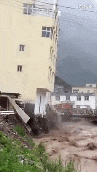
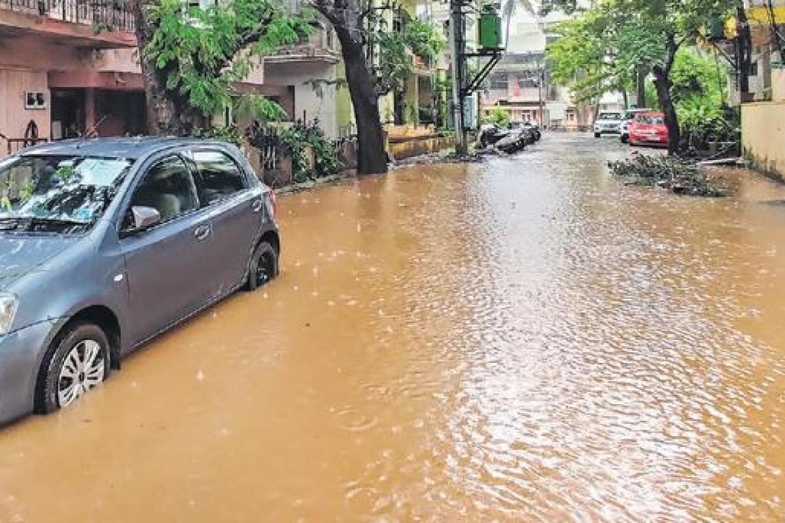

Big Solutions for a small planet
Climate change knows
no borders.
Solution of Flooding
FLODDING
Bioengineering or vegetative engineering is an “engineered” combination of vegetation used for the stabilization of riverbanks to reduce the erosion in the flood-prone area and is a solution to flooding. It is an effective low- cost measure for flood control project. The vegetative or bioengineering techniques may be tree & shrub planting, grass seeding, tree & shrub seeding, bamboo planting, turfing, vegetated rip-rap, vegetated gabions, and many others. Bioengineering system work by fulfilling the engineering functions required for the protection and stabilization of riverbank slopes. The bio-engineering works with civil structures and without civil structures (only vegetation) fulfill one or more or the roles of catching debris, armoring the surface, reinforcing the soil, anchoring the surface layer, supporting the slope etc.
 